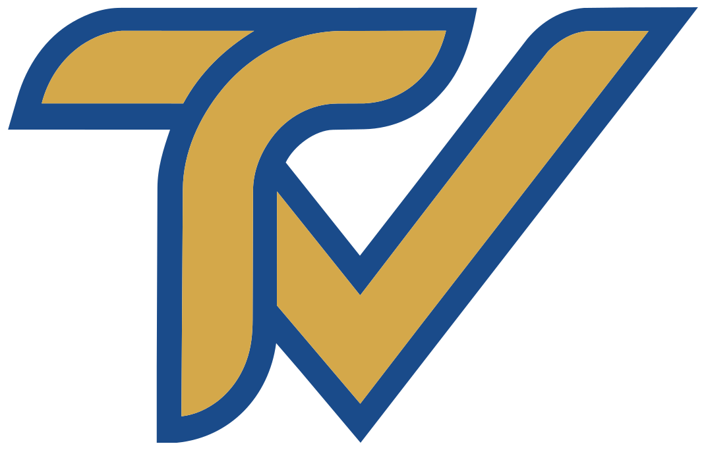

Erasmus+
AB'nin amiral gemisi gençlik programı
Erasmus+, Avrupa Birliği'nin eğitim, öğretim, gençlik ve spor programıdır. 2021–2027 için 26,2 milyar Euro'luk bütçesiyle dünyanın en büyük uluslararası hareketlilik programıdır. Türkiye, Erasmus+ Program Ülkesi'dir — yani Türk gençlik kuruluşları, AB kuruluşlarıyla eşit şartlarda fon başvurusunda bulunabilir.
KA1 · Hareketlilik
Yaş 13-30
Gençlik Değişimleri
Farklı ülkelerden 13-30 yaş arası gruplar, ortak bir konuda çalışmak için 5-21 gün bir araya gelir. Genellikle 10-60 katılımcı. Tüm masraflar Erasmus+ hibesi ile karşılanır.
Daha fazla bilgi →
Yetişkinler 18+
Eğitim Kursları
Gençlerle çalışan kişiler için mesleki gelişim. Kolaylaştırıcılık, yaygın eğitim, proje yönetimi ve kültürlerarası diyalog konularını kapsar. 5-14 gün sürer.
Daha fazla bilgi →
KA2 · Ortaklıklar
3+ ülke
İşbirliği Ortaklıkları
3'ten fazla kuruluş arasında 12-36 ay süren çok yıllı ortaklıklar. Ortak bir gençlik sorunu etrafında uygulamalar ve materyaller geliştirir. 60.000-400.000 Euro arası bütçeler.
Daha fazla bilgi →
Giriş seviyesi
Küçük Ölçekli Ortaklıklar
Erasmus+'a yeni olan kuruluşlar için basitleştirilmiş hibe. İki veya daha fazla ortak, esnek formatlar, maksimum 30.000 Euro bütçe — ilk Erasmus+ projesi için ideal.
Daha fazla bilgi →
Dayanışma Programı
Avrupa Dayanışma Programı (ESC)
Avrupa Dayanışma Programı (ESC), 18-30 yaş arası gençlere Avrupa çapındaki kuruluşlarda gönüllü olma, çalışma veya staj yapma şansı verir — tamamen finanse edilir. Türk gençleri katılma hakkına sahiptir ve Türk kuruluşları gönüllü ağırlayabilir veya gönderebilir. ESC, Erasmus+'tan ayrıdır ancak benzer bir çerçeve kullanır.
Bireysel Gönüllülük
Başka bir Avrupa ülkesindeki bir kuruluşta 2-12 ay gönüllü olun. Konaklama, yemek, cep harçlığı, seyahat ve sigortanın tamamı karşılanır — anlamlı bir boşluk yılı için ideal.
Yaş 18-30 · Tamamen fonlanmış →
Dayanışma Projeleri
Aynı ülkeden 5 veya daha fazla gençten oluşan gruplar, topluluklarındaki bir ihtiyacı karşılamak için kendi yerel projelerini düzenler ve yürütür — ev sahibi kuruluşa gerek yoktur.
Toplum temelli →
Türkiye'de Gönüllü Ağırlama
Akredite Türk kuruluşları Avrupalı gönüllüleri ağırlayabilir. Bu, YouthTICK'in araştırdığı yollardan biri — yerel sivil projelere katkıda bulunmak için genç Avrupalıları Yalova'ya getirmek.
Hazırlık aşamasında →
ESC'ye katılmak isteyen her gencin AB Gençlik Portalı'nda ücretsiz bir PASS profili oluşturması gerekir — 10 dakika sürer ve tüm ESC faaliyetleri için başlangıç noktasıdır.
AB Gençlik Programları
Bilinmesi gereken diğer Avrupa programları
Erasmus+ ve ESC'nin ötesinde, Avrupa bir dizi gençlik ve sivil toplum programını finanse ediyor. Birçoğu Türk gençlik kuruluşlarına açıktır.
01
Avrupa Konseyi — Gençlik Departmanı
Gençlik çalışanları ve gençler için eğitim kursları, seminerler ve çalışma oturumları düzenler. Strazburg ve Budapeşte'deki Avrupa Gençlik Merkezleri yılda yüzlerce etkinliğe ev sahipliği yapıyor. Türkiye'ye açık.
02
Anna Lindh Vakfı
Avrupa ve Akdeniz toplumları arasındaki kültürlerarası diyaloğa odaklanır. Türkiye üye devlettir — YouthTICK'in kültürlerarası çalışmalarıyla güçlü bir uyum içindedir.
03
SALTO Kaynak Merkezleri
Erasmus+ uygulamasını destekleyen kaynak merkezleri ağı. SALTO Youth, eğitim takvimleri, araç kitleri ve ortak bulma araçları yayınlar.
04
Avrupa Gençlik Forumu
Avrupa düzeyinde 180 gençlik kuruluşunu temsil eden platform. Üyelik, savunuculuk ağlarına ve AB kurumlarıyla bağlantılara erişim sağlar — YouthTICK için uzun vadeli bir hedef.
Almanya–Türkiye
Almanya-Türkiye koridoru
Almanya, Türkiye ile en derin ikili gençlik işbirliği ilişkilerinden birine sahiptir. Özel programlar ve kurumlar, her iki ülkede gençlik değişimlerini, dil öğrenimini ve sivil katılımı finanse eder. Bu, YouthTICK'in öncelikli koridorudur — bu alanda güvenilir bir köprü olmak için çalışıyoruz.
YouthTICK Nasıl Yardımcı Olur
Bilgiden katılıma
Bu programların var olduğunu bilmek ilk adımdır. Bunlar üzerinde harekete geçmek destek gerektirir. Biz YouthTICK'i bunu sağlamak için inşa ediyoruz.
Adım 01
Oryantasyon
Hangi programların hedeflerinize, kuruluşunuzun aşamasına ve kapasitenize uygun olduğunu anlamanıza yardımcı oluyoruz.
Adım 02
Ağ (Network)
Sizi, Almanya'da ve Avrupa çapında sizin gibi ortak çalışanlar arayan potansiyel ortak kuruluşlarla buluşturuyoruz.
Adım 03
Başvuru Desteği
Büyüdükçe, ortak kuruluşları ilk Erasmus+ başvurularını hazırlamada desteklemeyi planlıyoruz — yazma, yapılandırma, sunma.
Adım 04
Uygulama
Projeleri birlikte uygulayın — uzmanlığı, lojistiği ve etkiyi sınırların ötesinde uzun vadeli paylaşın.
Açık Çağrılar · Güncellendi: Mayıs 2026
Şu an aktif fırsatlar
Erasmus+ KA1 · Açık
Gençlik Değişimi — Ortak Arama (Almanya)
YouthTICK, sivil katılım temalı ikili gençlik değişimi için bir Alman ortak kuruluş arıyor. 16 katılımcı, 8 gün, Yalova 2026. Yaş 16-26 · Son Başvuru: Temmuz 2026.
İlginizi bildirin →
ESC Gönüllülüğü · Sürekli Açık
Avrupa Dayanışma Kolu — Sürekli Başvurular
AB Gençlik Portalı, Avrupa genelinde ESC gönüllüleri için sürekli açık ilanlar yayınlıyor. 18-30 yaş arası Türk gençler başvurabilir — tamamen karşılanıyor. Başlamak için PASS profili oluşturun.
AB Portalından Başvur →
18+ gençlik çalışanları · Birden fazla son tarih
Gençlik Çalışanları için Eğitim Kursları — 2026 Takvimi
SALTO, Erasmus+ gençlik çalışanları için kapsamlı bir eğitim takvimi yayınlıyor. Kolaylaştırma, kültürlerarası öğrenme, proje yönetimi ve yaygın eğitim yöntemleri dahil.
Takvimi incele →
💡 Listelememizi istediğiniz bir açık çağrı var mı? Bize bildirin →
2026 Son Tarihleri
Erasmus+ 2026 Başvuru Son Tarihleri
Resmi TUA (Türkiye Ulusal Ajansı) son tarihleri. Bir turu kaçırmak 6 ay bekleme anlamına gelir — önceden planlayın.
1. Tur — Kapalı
KA1 Gençlik — 1. Tur: Gençlik değişimleri, eğitim kursları, gönüllülük.
1. Tur — Kapalı
KA2 Ortaklıklar — 1. Tur: İşbirliği ortaklıkları, küçük ölçekli ortaklıklar.
2. Tur — Yaklaşıyor
KA1 Gençlik — 2. Tur: Gençlik değişimleri, eğitim kursları, gönüllülük.
2. Tur — Yaklaşıyor
KA2 Ortaklıklar — 2. Tur: İşbirliği ortaklıkları, küçük ölçekli ortaklıklar.
3. Tur — Yaklaşıyor
KA1 Gençlik — 3. Tur: Gençlik değişimleri, eğitim kursları, gönüllülük.
Her Zaman Açık
ADB Bireysel Gönüllülük: AB Gençlik Portalı PASS profili üzerinden her zaman başvurulabilir.
Sıkça Sorulan Sorular
Fırsatlar hakkında bilmen gerekenler
Yeni Erasmus+ çağrıları, ortak aramaları veya fırsatlar yayınlandığında e-posta ile haberdar ederiz. Spam yok — her ilgili çağrı için bir e-posta. E-postanız yalnızca seçtiğiniz bildirimler için kullanılır, istediğiniz zaman abonelikten çıkabilirsiniz.

Senin için doğru fırsatı bulalım